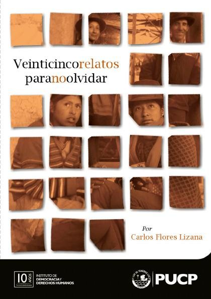
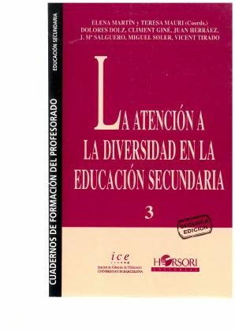
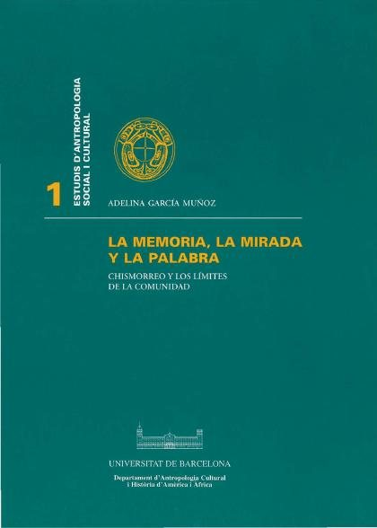
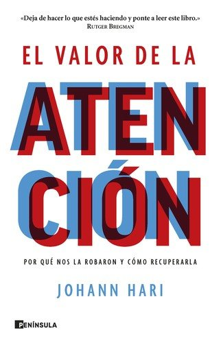
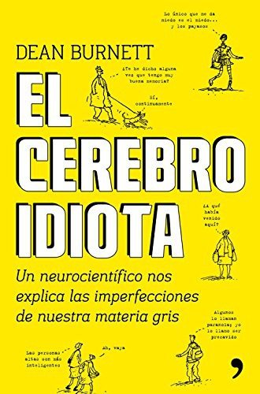
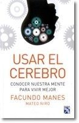
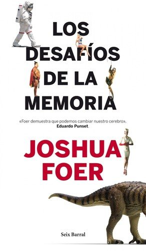
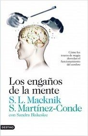
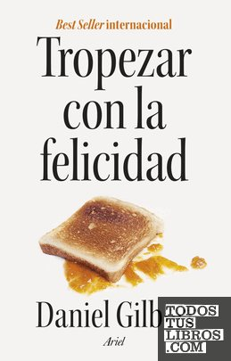

Libros de procesos mentales y cognición
Libros de procesos mentales y cognición en español: 32 libros completos para leer gratis aquí mismo y 10 fichas de títulos actuales.
Psicología cognitivaRepresentación mentalMemoria episódicaFalsos recuerdosRecuperación de recuerdosReconocimientoOlvidoMemoria a largo plazoMetacogniciónRazonamiento deductivoRazonamiento inductivoRazonamiento analógicoResolución de problemasFormación de conceptosCategorizaciónPercepción visualMemoria semánticaConcentraciónAtención selectivaAtención sostenida
El estudio empírico de la memoria: Los tres momentos de la memoriaPérez Mata, María Nieves; López Frutos, José María
El estudio empírico de la memoria: Los tres momentos de la memoriaPérez Mata, María Nieves; López Frutos, José MaríaImpacto de la música en el desarrollo cognitivo y neuronal: explorando beneficios y desafíosGonzález Hernández, Edurne; Bausela Herreras, Esperanza; Lorenzo de Reizábal, Arantza
Impacto de la música en el desarrollo cognitivo y neuronal: explorando beneficios y desafíosGonzález Hernández, Edurne; Bausela Herreras, Esperanza; Lorenzo de Reizábal, ArantzaManual De Neurodivergencias Y Adaptaciones Razonables Una Guía Para La Educación Inclusiva ( 1).docxDiego Vega
Manual De Neurodivergencias Y Adaptaciones Razonables Una Guía Para La Educación Inclusiva ( 1).docxDiego VegaMás allá de la muerte : hacia una antropología de la memoria y de los objetosBustamante Danilo, Javiera
Más allá de la muerte : hacia una antropología de la memoria y de los objetosBustamante Danilo, JavieraRepercusiones neuronales y cognitivas de la formación musicalGonzález Hernández, Edurne; Lorenzo de Reizábal, Arantza; Bausela Herreras, Esperanza
Repercusiones neuronales y cognitivas de la formación musicalGonzález Hernández, Edurne; Lorenzo de Reizábal, Arantza; Bausela Herreras, EsperanzaLa representación de lo diferente: el autismo en la narativa mediáticaHidalgo Yugcha, Paola Vanessa
La representación de lo diferente: el autismo en la narativa mediáticaHidalgo Yugcha, Paola VanessaInterruptores y capacidad de atenciónMartínez Moliner, Carlos
Interruptores y capacidad de atenciónMartínez Moliner, CarlosPerspectiva cognitiva del estudio del desarrollo de la escritura y sus alteracionesMiranda, María Agustina
Perspectiva cognitiva del estudio del desarrollo de la escritura y sus alteracionesMiranda, María AgustinaLa atención psicoeducativa en la primera infancia. Evaluación de centros, servicios y programasSecanilla Campo, Esther Maria
La atención psicoeducativa en la primera infancia. Evaluación de centros, servicios y programasSecanilla Campo, Esther MariaLa memoria de los testigosJavier de la Fuente Arnanz
La memoria de los testigosJavier de la Fuente ArnanzDel conductismo, cognitivismo y constructivismo al conectivismo para la educaciónLedesma-Ayora, Marco
Del conductismo, cognitivismo y constructivismo al conectivismo para la educaciónLedesma-Ayora, MarcoRompiendo barreras. Propuesta de atención integral a las discapacidadesEras Nieto, Jairo Vinicio
Rompiendo barreras. Propuesta de atención integral a las discapacidadesEras Nieto, Jairo VinicioDéficits de atención y transtornos de conductaAlsina Masmitjà, Gemma; Saumell Mir, Carme; Arroyo Rodríguez, Àngels; Amador-Campos, Juan Antonio; Mena Pujol, Beatriz; Salat Foix, Laia; Badia, Mar; Mas Salsench, Blanca; Contreras Contreras, Claudia
Déficits de atención y transtornos de conductaAlsina Masmitjà, Gemma; Saumell Mir, Carme; Arroyo Rodríguez, Àngels; Amador-Campos, Juan Antonio; Mena Pujol, Beatriz; Salat Foix, Laia; Badia, Mar; Mas Salsench, Blanca; Contreras Contreras, ClaudiaLa evolución de la atribución psicológica : lectura de mentes y metacogniciónQuintanilla Pérez Wicht, Pablo
La evolución de la atribución psicológica : lectura de mentes y metacogniciónQuintanilla Pérez Wicht, PabloVeinticinco relatos para no olvidar.Flores Lizana, Carlos
Veinticinco relatos para no olvidar.Flores Lizana, Carlos
¿Qué tipo de niveles postular en las explicaciones en ciencias cognitivas?Ahumada, José; Branca, Mariana Itatí
¿Qué tipo de niveles postular en las explicaciones en ciencias cognitivas?Ahumada, José; Branca, Mariana ItatíEspacio Europeo de Educación Superior: estándares e indicadores de buenas prácticas para la atención a estudiantes universitarios con discapacidadDíez Villoria, Emiliano; Alonso, Alba; Verdugo Alonso, Miguel Ángel; Campo Blanco, Isabel; Sancho, Isabel; Sánchez, Sergio; Calvo Álvarez, María Isabel; Moral Cabrero, Eva
Espacio Europeo de Educación Superior: estándares e indicadores de buenas prácticas para la atención a estudiantes universitarios con discapacidadDíez Villoria, Emiliano; Alonso, Alba; Verdugo Alonso, Miguel Ángel; Campo Blanco, Isabel; Sancho, Isabel; Sánchez, Sergio; Calvo Álvarez, María Isabel; Moral Cabrero, EvaMetacognición y lecturaPinzás G., Juana
Metacognición y lecturaPinzás G., JuanaPrograma de actuación cognitiva integral en demencias (PACID)García Meilán, Juan José; Carro Ramos, Juan Avelino
Programa de actuación cognitiva integral en demencias (PACID)García Meilán, Juan José; Carro Ramos, Juan AvelinoDesarrollo del juicio moral y de la complejidad cognitiva a través de un diseño instruccionalFrisancho, Susana
Desarrollo del juicio moral y de la complejidad cognitiva a través de un diseño instruccionalFrisancho, SusanaLa Atención a la diversidad en la educación secundariaDolz, Dolores; Martín, Elena (Martín Ortega); Mauri, Teresa; Giné Giné, Climent, 1948-; Herráez, Juan; Salguero, José Mª.; Soler, Miguel; Tirado, Vicent
La Atención a la diversidad en la educación secundariaDolz, Dolores; Martín, Elena (Martín Ortega); Mauri, Teresa; Giné Giné, Climent, 1948-; Herráez, Juan; Salguero, José Mª.; Soler, Miguel; Tirado, Vicent
La Memoria, la mirada y la palabra: el chismorreo y los límites de la comunidadGarcía Muñoz, Adelina; Universitat de Barcelona. Departament d'Antropologia Cultural i Història d'Amèrica i d'Àfrica
La Memoria, la mirada y la palabra: el chismorreo y los límites de la comunidadGarcía Muñoz, Adelina; Universitat de Barcelona. Departament d'Antropologia Cultural i Història d'Amèrica i d'Àfrica
Importancia de la imaginación en el estudio de la fisiología : memoria leida en la sesión pública extraordinaria de 25 de junio de 1892 celebrada por la Real Academia de Ciencias y Artes de Barcelona con motivo de la recepción del autor como académico numerario /Coll i Pujol, Ramon, 1845-1915
Importancia de la imaginación en el estudio de la fisiología : memoria leida en la sesión pública extraordinaria de 25 de junio de 1892 celebrada por la Real Academia de Ciencias y Artes de Barcelona con motivo de la recepción del autor como académico numerario /Coll i Pujol, Ramon, 1845-1915Déficits de atención y trastornos de conducta, febrero 2021Contreras Contreras, Claudia; Badia, Antoni; SIMÓ PINATELLA, DAVID; Raja Gonzàlez, Pilar; Astasio, Sheila Cecilia; Amador-Campos, Juan Antonio; Mena Pujol, Beatriz; Salat Foix, Laia; Krieger, Virginia
Déficits de atención y trastornos de conducta, febrero 2021Contreras Contreras, Claudia; Badia, Antoni; SIMÓ PINATELLA, DAVID; Raja Gonzàlez, Pilar; Astasio, Sheila Cecilia; Amador-Campos, Juan Antonio; Mena Pujol, Beatriz; Salat Foix, Laia; Krieger, VirginiaEfectos psicosociales en las víctimas directas del terrorismo de Estado ante las actuales acciones del Estado argentino de deslegitimación de políticas de memoria, verdad, justicia y reparaciónGiannasi, Aldana
Efectos psicosociales en las víctimas directas del terrorismo de Estado ante las actuales acciones del Estado argentino de deslegitimación de políticas de memoria, verdad, justicia y reparaciónGiannasi, AldanaPsicología de la atención y de la memoria, septiembre 2019Baqués, Josep; Fuente Arnanz, Javier de la; Noreña Martínez, David de; González Rodríguez, Begoña; Luna Lario, Pilar; Martínez Simón, Sílvia; Pousada, Modesta; Ramon-Casas, Marta; Sáiz Roca, Dolores;
Psicología de la atención y de la memoria, septiembre 2019Baqués, Josep; Fuente Arnanz, Javier de la; Noreña Martínez, David de; González Rodríguez, Begoña; Luna Lario, Pilar; Martínez Simón, Sílvia; Pousada, Modesta; Ramon-Casas, Marta; Sáiz Roca, Dolores; Conceptos, lenguaje y cogniciónScotto, Silvia Carolina; Aguilera, Mariela; Danón, Laura; Glock, Hans-Johann; Bermúdez, José Luis; Kalpokas, Daniel Enrique; Camp, Elisabeth; Castellano, Federico; Beck, Jacob
Conceptos, lenguaje y cogniciónScotto, Silvia Carolina; Aguilera, Mariela; Danón, Laura; Glock, Hans-Johann; Bermúdez, José Luis; Kalpokas, Daniel Enrique; Camp, Elisabeth; Castellano, Federico; Beck, JacobPsicología del pensamientoFernando Gabucio Cerezo, Josep Maria Domingo Curto, Fanny Lichtenstein Tiviroli y otros
Psicología del pensamientoFernando Gabucio Cerezo, Josep Maria Domingo Curto, Fanny Lichtenstein Tiviroli y otrosPracticas Experimentales en Percepción VisualAznar Casanova, José Antonio
Practicas Experimentales en Percepción VisualAznar Casanova, José AntonioControl inhibitorio e interferencia en la cogniciónGómez-Ariza, Carlos J.; Iglesias-Parro, Sergio; Lechuga, Teresa; Lendínez, Cristina; Martín, María Cruz; Ortega, Almudena; Pelegrina, Santiago; Suárez, Antonio
Control inhibitorio e interferencia en la cogniciónGómez-Ariza, Carlos J.; Iglesias-Parro, Sergio; Lechuga, Teresa; Lendínez, Cristina; Martín, María Cruz; Ortega, Almudena; Pelegrina, Santiago; Suárez, AntonioPsicología de la atenciónRibot, Th. (Théodule), 1839-1916
Psicología de la atenciónRibot, Th. (Théodule), 1839-1916Memoria, entendimiento, y voluntad. Empresas, que enseñan, y persuaden su buen vso en lo moral, ... ofrecelas a D. Iuan Eustaquio Vicentelo, y Toledo, cavallero de el abito de Santiago. ... El hermano Lorenzo Ortiz, de la Compañia de IesusLorenzo Ortiz
Memoria, entendimiento, y voluntad. Empresas, que enseñan, y persuaden su buen vso en lo moral, ... ofrecelas a D. Iuan Eustaquio Vicentelo, y Toledo, cavallero de el abito de Santiago. ... El hermano Lorenzo Ortiz, de la Compañia de IesusLorenzo OrtizEl valor de la atenciónJohann Hari
El valor de la atenciónJohann Hari
El cerebro idiotaDean Burnett
El cerebro idiotaDean Burnett
Usar el cerebroFacundo Manes y Mateo Niro
Usar el cerebroFacundo Manes y Mateo Niro
Los desafíos de la memoriaJoshua Foer
Los desafíos de la memoriaJoshua Foer
Los engaños de la menteStephen L. Macknik y Susana Martínez-Conde
Los engaños de la menteStephen L. Macknik y Susana Martínez-Conde
En busca de la memoriaEric R. Kandel
En busca de la memoriaEric R. KandelEnfócateCal Newport
EnfócateCal NewportSuperficiales. ¿Qué está haciendo Internet con nuestras mentes?Nicholas Carr
Superficiales. ¿Qué está haciendo Internet con nuestras mentes?Nicholas CarrTropezar con la felicidadDaniel Gilbert
Tropezar con la felicidadDaniel Gilbert
IndistraíbleNir Eyal
IndistraíbleNir EyalTemas relacionados
¿Estás eligiendo carrera?
Haz gratis el test de orientación vocacional de AURZANE: intereses, aptitudes, autoconcepto y hábitos de estudio, con informe completo.